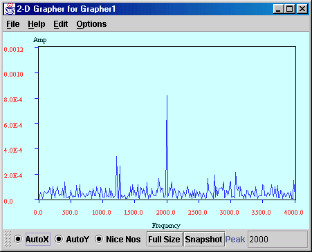
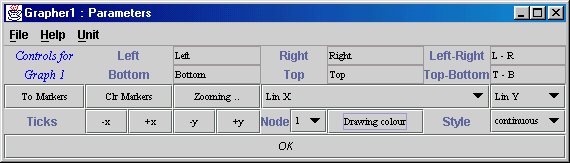
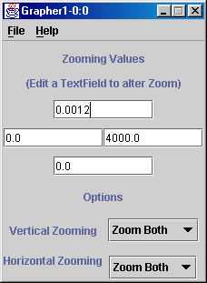

Output Index
Grapher
Author : Ian Taylor
Input Types : VectorType,
Curve
Date : 2 August 2000
The Graphical Displayer
The graphical displayer is a window can simultaneously display a number
of data sets. Each data set can have its own line style and colour. Most
triana data types can be displayed using the Grapher unit e.g. SampleSets,
Spectra, Histograms, Curves etc. The specific types are converted automatically
into the Triana VectorType and then Graphed.

The AutoX and AutoY check buttons enable and disable the
automatic scaling of the X and Y axis. If you would like to zoom into the
image then you must turn these off to stop the graph resetting to its maximum
and minimum x and y values.
The Nice Nos check box specifies whether the numbers on the axis
should quantise to the nearest nice values for displaying purposes. Often
it is more useful to see a scale such as 0, 100, 200, 300, 400 rather than
0 99.7, 198.4 etc even though the graph may have to be re-scaled to make
this possible.
The Full Size key returns the display to the maximum bounds.
The Snapshot button holds the Grapher on the current image even though
other signals may be input into it. This is handy if you're use Triana
as a visual feature detector. If you see what you are looking for then
you can click the Snapshot to analyse the plot more closely or to save
it to disk etc.
The Peak text field displays the peak frequency that is automatically
detected on each iteration. This is useful for quick look purposes. Other
points of interest may be seen more easily by using the marker descibed
below.
Menu's
Each menu item is covered below :-
File
-
Open : Opens a file which has been previous saved by the grapher
or which has been saved by the TypeExport unit and loads it into the graphical
displayer.
-
Save : saves the contents of this grapher to a text file
-
Print : prints the contents of the window to a printer
-
Close : closes the window
Edit
-
Undo Zoom : Undoes the last zoom that the user performed.
Options
-
Zooming : Pulls up the zoom options window
for this grapher
-
Show Graph Options : Brings up the control
window for the grapher.
-
Graph Colours : displays a window which allows you to edit the colours
of the graph e.g. the background colour, axis colour, axis label colour
and the colour of the text for the title of the Graph.
-
Graph To Front : each time the grapher receives new input it forces
itself to the front of other window which may be obscuring the view (this
is not the default). When this menu item is clicked its label is changed
to 'Not To Front' indicating that if clicked again the window would not
be brought to the front each time it is updated.
Grapher Controls Window

The Grapher's unit Window makes it possible to change many settings
to customize how the grapher display the data. The first two rows display
the markers which may be added to the graph. Markers allow the user
to draw vertical or horizontal lines on the graph and move them around
so that exact values can be viewed. Such values are inserted into these
fields.
Adding and Deleting Markers
Vertical markers can be added by double clicking at the desired position
using the left mouse button. To add a horizontal marker, double click using
the right mouse button. On the top of the controls window (above), there
are 6 text fields. These display the precise positions of the markers and
the difference between the markers. You can therefore use the markers to
roughly measure, for example, signal to noise ratios etc. Markers can be
moved by dragging them with the mouse and they are deleted by double clicking
on them whilst holding down the control key.
The functions of the remaining widgets are described below in a chronological
order:
The To Markers button zooms the display into the box created
by positioning the four marker lines. The Clr Markers button clears
all markers from the display.
The Zooming button brings up the Zooming-control window.
The next two choice boxes allow the following plot options (for spectral
data only) :-
-
Lin X : displays the spectrum in a linear x plot.
-
Log X : displays the spectrum in a logarithmic x plot.
-
Lin Y : displays the spectrum in a linear y plot.
-
Log Y : displays the spectrum in a logarithmic y plot.
The next four buttons allow the user to decrease and increase the number
of x and y ticks, respectively. The next three choices allow the user to
set the colours and line styles for the data being displayed from each
input node. There are 13 colours to choose from and 4 different line styles
:-
-
Continuous : When the points are joined.
-
Scatter Plot : When each data points is represented by a single
dot, and
-
Impulse Plot : When a line is drawn from each point vertically to
the lower horizontal axis.
-
Bar Chart Plot : Useful for displaying Histograms. A line is drawn
from each point vertically to the lower horizontal axis and horizontally
to the next point.
Zooming
There are many different ways of zooming into and out of the grapher. You
can use the zoom controller window for precise
zooming ranges or a more intuitive way is to drag into and out of the image
using the mouse. This mechanism is covered in the next section.
Using the Mouse to Zoom
There are various ways how you can use the mouse to zomm in and out of
the image. These are listed below :-
-
You can zoom to the markers by clicking the ToMkr button on the control
panel.
-
To zoom out to full size press the right mouse button.
The next functions are much more powerfull, allowing you to navigate through
the image :-
-
To zoom drag (using the left mouse button) :-
-
right to zoom in horizontally
-
left to zoom out horizontally
-
down to zoom in vertically
-
up to zoom out vertically
Therefore to zoom in, in both directions, drag the mouse at a 45 degree
angle from top left to bottom right.
-
To move around whilst you are zoomed into an area you press down
the control key and drag (using the left or right
mouse button) left to move left, right to move right, up to move up and
down to move down.
-
Perhaps the most powerfull of all is the ability to drag to the position
in the display that you are interested in. This is a very usefull feature
when viewing spectral information because you can literally drag to the
frequency that you are interested in. To do this drag (using the right
mouse button) :-
-
from roughly the top central part of the image to the bottom part
of the image which you are interested in. This zooms in and expands the
actual part of the image which you are dragging into. The image will be
effectively dragged increasingly towards the position you are dragging
to so you can stop at any time.
-
the reverse to zoom back out again.
Zooming options
The Zoom option window allows you to specify precisely what area of the
image you want to look at. Simply specify the north, east, south and west
values editing the four self-explanatory text fields at the upper part
of the window. There is also a button to go to half size, go back to full
size and a radio button to select if the current zoom setting should be
kept for future data inputs.

Also, there are two choice boxes at the lower part of the window which
specify in which way to zoom. For example, if the user specifies the horizontal
zoom to BOTH then dragging the mouse to the right will zoom into
the centre part of the image. If Zoom East was selected then the
right part of the image would be expanded and so on. These options should
give the user enough flexibility to zoom in and out in the desired way
for their particular type of data.